SPORTS MEDICINE & ARTHROSCOPY DIGEST
运动医学 · 关节镜文献速览
第 010 期 · 2026-09-17
9月16日单日 10 本核心期刊新收录 23 篇（剔除编辑评论与仅题录后精选 13 篇）
按部位分类：膝 6 · 髋 3 · 踝足 4 ｜ 含 1 篇 Current Concepts · 3 篇倾向性评分匹配/匹配对照研究
编者按 EDITOR'S NOTE
本期覆盖 9 月 16 日单日新收录文献，10 本核心期刊共检出 23 篇，剔除 1 篇编辑评论与无实质摘要的题录后精选 13 篇（单日检出量充足，未启用扩窗兜底）。
本期两条线值得单独拎出。第一条是 LARS 增强修复 vs 自体腱重建治疗慢性踝关节不稳（Foot & Ankle Int.）：112 例、随访 24 个月，LARS 组在术后 1、3、6 个月的功能评分显著更高，但 12 个月后两组差异消失——这提示 LARS 的价值主要在加速早期恢复而非改善远期结果，对选择术式时的患者沟通很有意义。第二条是 ACL 一期修复的滑膜鞘完整性：281 例中滑膜鞘完整性 <50% 者失败风险增加 3.31 倍（OR 3.31，P=.049），且与更复杂的撕裂形态相关——为「什么样的 ACL 适合一期修复」提供了可术中判断的指标。
▍膝关节 · 6 篇
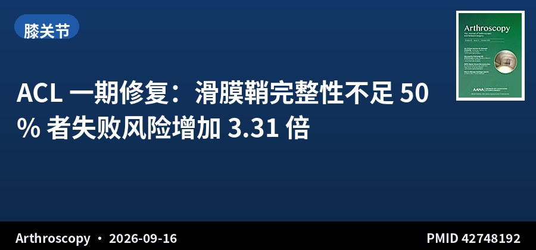
回顾性队列 · III级证据 · 281例 · 随访2年以上
ACL 一期修复：滑膜鞘完整性不足 50% 者失败风险增加 3.31 倍
Poor Synovial Sheath Integrity Is Associated With an Increased Failure Rate After Anterior Cruciate Ligament Primary Repair
Arthroscopy · 2026-09-16 · 美国特种外科医院（HSS） · PMID 42748192
一句话结论：281 例近端 ACL 撕裂行选择性解剖双缝线锚钉一期修复（平均 39.1 岁），234 例完成≥2 年随访，失败 24 例（10%）。多因素分析显示滑膜鞘完整性 <50%（OR 3.31，P=.049）与更年轻年龄（每年轻 1 岁风险增 6%，P<.001）为独立失败预测因素。
要点：滑膜鞘完整性按 I 级（完全完整）、II 级（>50% 完整）、III 级（<50% 完整）分级，撕裂形态分为单束、双束与复杂型，均由两名评估者盲法回顾关节镜图像，观察者间一致性良好至优秀（κ=0.734–0.956）。滑膜鞘完整性越低与越复杂的撕裂形态显著相关（P<.001），复杂撕裂者 2 年 PROMs 更差。
对临床的启示：ACL 一期修复近年回潮，但「谁适合」始终缺乏客观标准。这项研究把判断依据落到了两个可在术中直接看到的指标上：滑膜鞘完整性（决定愈合微环境）与年龄。滑膜鞘 <50% 的患者应慎重考虑一期修复、更倾向于重建。注意本研究平均随访的末次体格检查仅 3.4 个月，失败率可能被低估，长期数据仍需等待。
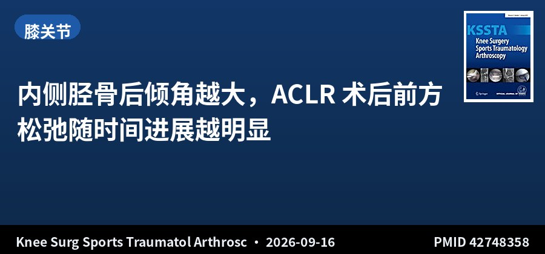
回顾性队列 · III级证据 · 319例 · 随访2年
内侧胫骨后倾角越大，ACLR 术后前方松弛随时间进展越明显
Increased medial posterior tibial slope is associated with greater postoperative anterior tibial translation over time after anterior cruciate ligament reconstruction
Knee Surg Sports Traumatol Arthrosc · 2026-09-16 · 法国马赛大学 · PMID 42748358
一句话结论：319 例腘绳肌腱单束 ACLR，绝对前方松弛（ATT）术前 5.8mm，术后 2 个月降至 2.9mm，1 年回升至 4.9mm、2 年达 6.8mm。内侧 PTS 与 1 年（r=0.2，P=.001）、2 年（r=0.3，P<.001）的 ATT 侧间差正相关且为独立预测因素。
要点：采用 Telos 应力位 X 线测量双膝 ATT，PTS 用圆法（circle method）测量。年龄更大（r=0.15，P=.009）与内侧软骨损伤（P=.008）与术后松弛更明显相关；行外侧关节外腱固定（LET）者 2 年 ATT 侧间差更低（6.1 vs 7.3mm，P=.009）。半月板与外侧软骨损伤无显著关联。
对临床的启示：「术后 2 个月很稳、之后逐渐变松」的规律在这项研究里被量化了——绝对 ATT 从 2.9mm 回升到 6.8mm。内侧 PTS 是这一进程的可干预变量：对后倾角偏大的患者，单纯 ACLR 可能不足以长期维持前方稳定，加做 LET 或考虑胫骨截骨值得纳入术前决策。相关性虽弱（r=0.2–0.3），但方向一致且独立，临床上有参考价值。
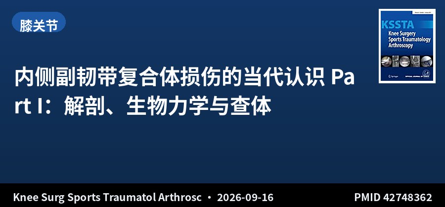
Current Concepts · 系统综述 · V级证据
内侧副韧带复合体损伤的当代认识 Part I：解剖、生物力学与查体
Current concepts in isolated and combined injuries of the medial collateral ligament complex—Part I: Anatomy, biomechanics, clinical and radiological examination of the medial collateral ligament of the knee
Knee Surg Sports Traumatol Arthrosc · 2026-09-16 · 德国慕尼黑工大 / 欧洲多中心 · PMID 42748362
一句话结论：系统梳理 MCL 复合体（sMCL、dMCL、后内侧复合体 PMC/POL）的解剖与生物力学，强调临床查体不可被影像替代，并给出一套针对各结构的规范化评估流程。
要点：sMCL 是抗外翻的首要限制结构，并在较大屈膝角度合并外旋时抵抗胫骨前移；dMCL 在低屈曲角度抵抗外旋，与前内侧旋转不稳（AMRI）密切相关；PMC/POL 主要限制胫骨内旋。查体要点：POL 需在完全伸直位评估；AMRI 需在屈膝 20° 测外翻松弛与前内抽屉，并在屈膝 90° 胫骨中立位与外旋位分别测前移。
对临床的启示：内侧结构损伤长期被当作「保守治疗即可」的次要损伤，这一系列把 MCL 复合体拆成三层结构分别评估，纠正了笼统看待的习惯。最实用的一条：只依赖 MRI 可能误判严重程度，双侧、逐结构的体格检查仍是金标准。合并 ACL-MCL 损伤的处理策略将在 Part II 展开，值得连读。
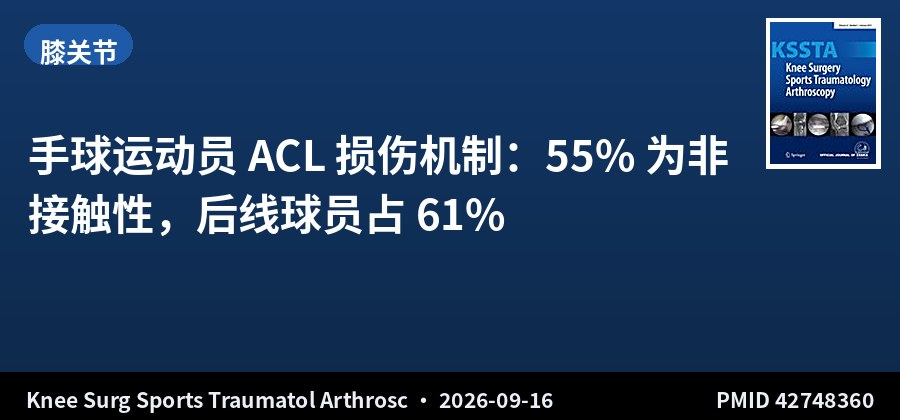
注册研究 · II级证据 · 4540例 · 丹麦全国登记
手球运动员 ACL 损伤机制：55% 为非接触性，后线球员占 61%
ACL injury mechanism in elite and recreational handball players
Knee Surg Sports Traumatol Arthrosc · 2026-09-16 · 丹麦哥本哈根大学医院 · PMID 42748360
一句话结论：丹麦全国登记 2000–2018 年共 4540 例手球相关 ACL 损伤：55% 为非接触性，25% 发生在转身变向、11% 在单腿落地时；31% 为不涉及伤膝的间接接触。女球员非接触性损伤显著更多（P=.011）。
要点：80% 的损伤发生在持球状态下，主要在变向虚晃（32%）或射门（30%）时；86.1% 发生在对方半场进攻时，其中以对方球门区与任意球线之间区域最多（38.1%）。后线球员占 61%；男球员在反击中受伤更多（P<.001）；40 岁以上者守门员位置受伤相对更多（P<.001）。
对临床的启示：这项全国登记研究把「手球 ACL 损伤」从笼统印象细化到了可干预的场景：持球、进攻、对方半场、后线球员、变向与射门——这几乎是可用来设计针对性神经肌肉训练与战术防护的全部要素。非接触性为主也意味着预防训练的重点在于落地与变向控制，而非单纯避免身体接触。
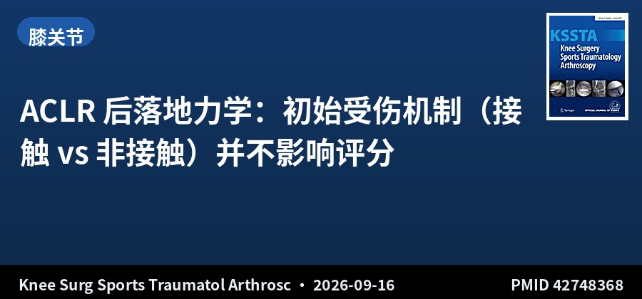
队列研究 · III级证据 · 129例 · 术后8个月
ACLR 后落地力学：初始受伤机制（接触 vs 非接触）并不影响评分
The mechanism of injury's role in jump landing mechanics after anterior cruciate ligament reconstruction
Knee Surg Sports Traumatol Arthrosc · 2026-09-16 · 美国弗吉尼亚联邦大学等 · PMID 42748368
一句话结论：129 例初次单纯 ACLR 患者（平均 21.4 岁，术后 8.1 个月），接触性（29.5%）与非接触性（70.5%）损伤机制两组在 LESS 总分（P=.930）、额面分（P=.831）、矢面分（P=.980）上均无差异，力量与 PROMs 也无差异。
要点：研究对象来自一项更大的观察性实验室研究，排除其他下肢手术史、合并韧带损伤、手术并发症及神经系统疾病。相当比例患者存在多项落地错误，提示晚期康复阶段仍需针对落地力学进行评估与训练。
对临床的启示：临床上有时会认为非接触性损伤患者「动作模式更差」、需要更长的神经肌肉训练——这项研究不支持这一假设。回归赛场的决策应以当前可改变的危险因素（落地力学等）为准，而非追溯初始受伤机制。LESS 异常者即便机制是接触性，同样需要干预。
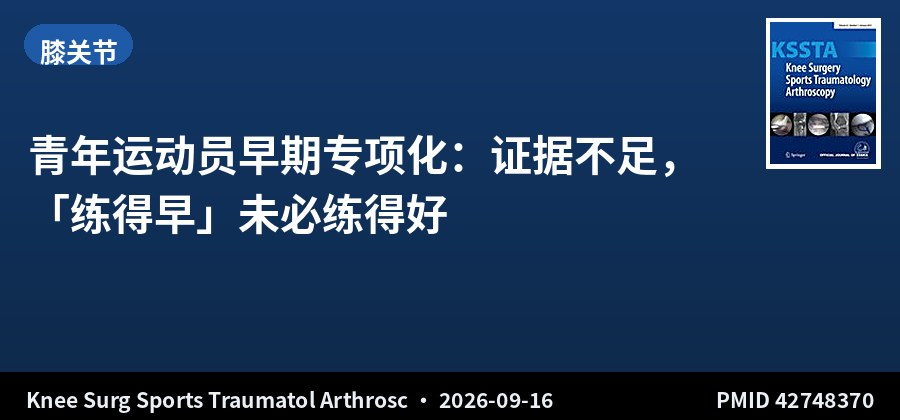
叙述性综述 · 青年运动员
青年运动员早期专项化：证据不足，「练得早」未必练得好
Youth athlete development and the burden of musculoskeletal injuries: Implications of early sport specialisation
Knee Surg Sports Traumatol Arthrosc · 2026-09-16 · 卢森堡骨科运动医学研究所 · PMID 42748370
一句话结论：青年运动损伤负担持续上升（患病率 34%–65%），过度使用损伤占全部青年运动损伤的 50%，ACL 重建等严重损伤近二十年显著增加。但现有证据并不支持早期专项化（ESS）是长期运动成功的可靠预测因素，多数优秀成年运动员青少年时期并非佼佼者。
要点：ESS 定义差异大、测量工具难以完整捕捉概念，高质量实证研究较少。作者主张 ESS 更应被视作一组交互暴露的替代指标——累计训练负荷、恢复实践、生物学成熟度、动作经验多样性与心理社会压力，这些才是损伤风险与运动员发展更可能的决定因素。
对临床的启示：「越早开始越可能成才」是家长与教练最常问的问题，这篇综述给出的答案是否定的：早期运动成绩对成年卓越的预测能力很差，而单一专项化带来的负荷与恢复问题反而推高损伤风险。与其问 ESS 本身是否有害，不如问哪种训练-发育-环境组合能同时支持成绩进步与长期健康。这对门诊中面对青少年运动员家长的沟通很有参考价值。
▍髋关节 · 3 篇
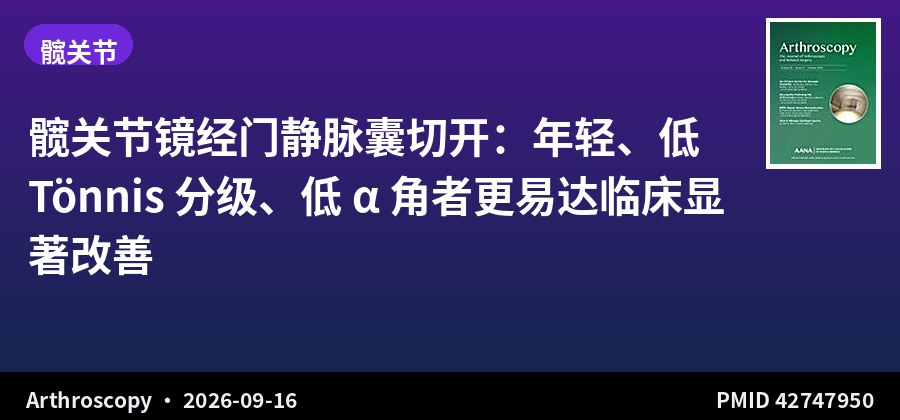
回顾性队列 · IV级证据 · 463例 · 随访2年
髋关节镜经门静脉囊切开：年轻、低 Tönnis 分级、低 α 角者更易达临床显著改善
Young Male Patients With Lower Tönnis Grade and Alpha Angle Are More Likely to Achieve Clinically Significant Outcome Improvement at 2 Years After Hip Arthroscopy for Femoroacetabular Impingement Syndrome Using Periportal Capsulotomy
Arthroscopy · 2026-09-16 · 美国 UCSF · PMID 42747950
一句话结论：463 例 FAI 综合征行髋关节镜经门静脉囊切开（conservative capsule management），2 年 HOOS、SF-12 PCS、VAS 的 PASS/SCB/MCID 达成率分别为 94.2%、76.7%、75.4%。高术前 α 角与低 Tönnis 分级降低各维度达标几率（OR 0.35–0.96），男性达标几率更高。
要点：排除髋关节骨关节炎、髋发育不良及随访不足 2 年者。采用前瞻性收集的单机构数据库做回顾分析，用校正后多因素回归识别与临床显著结局（CSO）达成相关的因素，同时报告 MCID、PASS、SCB 三类阈值。
对临床的启示：这项研究回答的是「什么样的患者做完髋关节镜会真的觉得好」——答案是软骨状态（Tönnis）与骨性形态（α 角）仍是主要瓶颈，而不是手术方式本身。对 α 角很大、Tönnis 已升级的患者，术前应给出更保守的预期，甚至优先讨论其他方案。经门静脉囊切开作为一种更保守的关节囊管理策略，在本文中取得了较高的达标率。对你正在做的 FAI Cam 病灶研究，这一阈值体系可作为术后评价的对照参考。
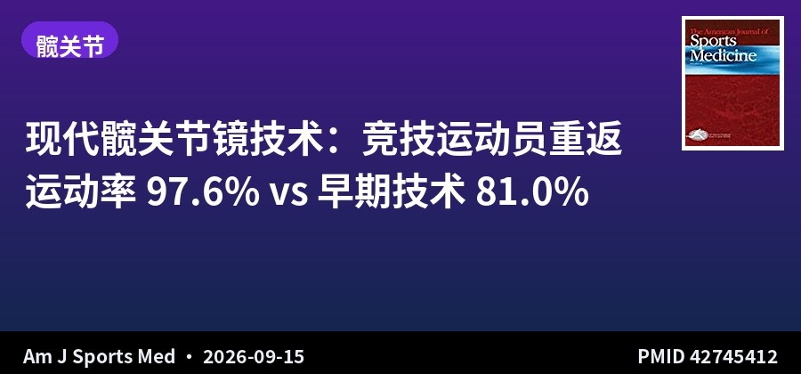
队列研究 · III级证据 · 98髋 · 倾向性评分匹配
现代髋关节镜技术：竞技运动员重返运动率 97.6% vs 早期技术 81.0%
Outcomes and Return-to-Sport Rates of Competitive Athletes Treated for Femoroacetabular Impingement Syndrome With Contemporary Hip Arthroscopy Techniques: A Matched Comparison to Early Techniques
Am J Sports Med · 2026-09-15 · 美国髋关节研究所 · PMID 42745412
一句话结论：98 髋（92 例）竞技运动员，按年龄、性别、BMI、竞技水平 1:1 倾向性评分匹配。现代技术组（关节囊修复 + 无结锚钉盂唇修复/重建）术后 mHHS、NAHS、iHOT-12、HOS-SSS 均优于早期技术组（P<.05），临床阈值达标率更高，重返运动率 97.6% vs 81.0%（P=.03）。
要点：现代技术组接受关节囊修复，盂唇处理为无结锚钉修复或重建；早期技术组盂唇处理为打结修复或清理，且未做关节囊修复。两组基线 PROMs 相似，均在术后显著改善。
对临床的启示：这是一项用 PSM 控制混杂后仍显示现代技术占优的研究，差异集中在「关节囊修复 + 保留/重建盂唇」这两个技术环节上。重返运动率从 81% 提升到 97.6% 是相当可观的差距。对你正在做的四步法无透视 FAI 研究，这篇可作为「技术演进带来结局改善」的直接文献支撑，也提示在讨论中应交代关节囊处理方式。
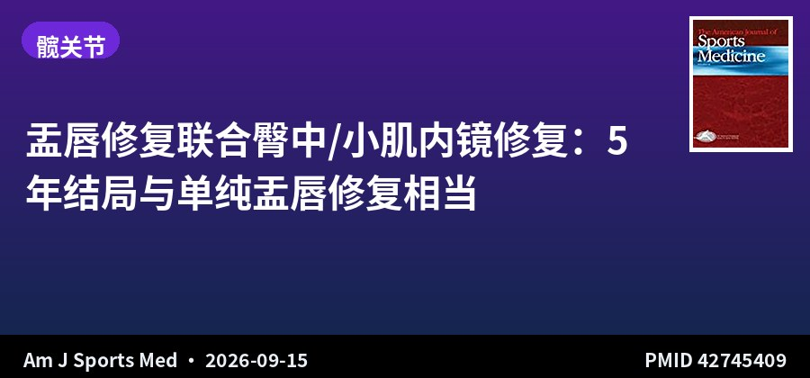
回顾性队列 · III级证据 · 27 vs 78 · PSM · 随访5年
盂唇修复联合臀中/小肌内镜修复：5 年结局与单纯盂唇修复相当
Labral Repair With Concomitant Endoscopic Gluteus Medius and/or Minimus Repair: Outcomes at a Minimum 5-Year Follow-up Relative to a Propensity Score-Matched Control Group
Am J Sports Med · 2026-09-15 · 美国 Rush 大学医学中心 · PMID 42745409
一句话结论：27 例联合臀肌+盂唇修复患者按年龄、性别、BMI 与 78 例单纯盂唇修复患者行倾向性评分匹配，术后≥5 年两组各 PROMs（HOS-ADL、HOS-SS、mHHS、iHOT-12、VAS）均较基线显著改善（P<.001），组间无显著差异（P≥.052），MCID 与 PASS 达标率及再手术无复发生存率也相当。
要点：联合组在展肌异常方面负担更重，但结局并未因此受损。研究纳入 2012–2019 年病例，采用倾向性评分匹配控制年龄、性别与 BMI 三个混杂因素。
对临床的启示：临床上对「盂唇损伤合并臀肌撕裂」常担心联合处理会拖累整体恢复，这项 5 年匹配研究给出了安心答案：把展肌异常一并处理好，不会牺牲盂唇修复的结局。对髋关节镜术前发现臀肌撕裂的患者，可以在同一次手术中处理，无需分期或回避。
▍踝足 · 4 篇
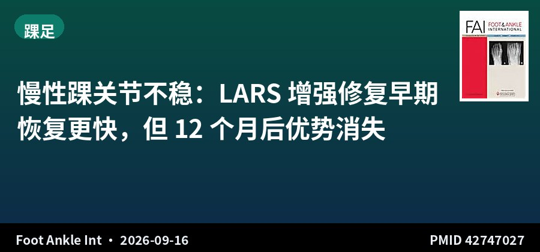
回顾性对照 · III级证据 · 112例 · 随访24个月
慢性踝关节不稳：LARS 增强修复早期恢复更快，但 12 个月后优势消失
Ligament Advanced Reinforcement System (LARS) Augmented Repair vs Autograft Reconstruction for Chronic Lateral Ankle Instability: A Retrospective Comparative Study
Foot Ankle Int · 2026-09-16 · 中国武汉第四医院 / 湖北省运动医学中心 · PMID 42747027
一句话结论：112 例慢性踝关节不稳，LARS 增强修复 54 例 vs 自体腱重建 58 例，随访 24 个月。所有结局随时间显著改善（均 P<.001）；LARS 组在 1、3、6 个月的 FAOS-Sport 与 Tegner 评分显著更高（均 P<.001），但 12 与 24 个月时组间差异不再存在。
要点：主要结局为 FAOS-Sport 与 Tegner，次要结局含其他 FAOS 亚量表与 VAS 疼痛。采用广义估计方程分析纵向恢复轨迹，并做基于 FAOS 的探索性 MCID 反应者分析：3 个月时 LARS 组达标比例更高，6 个月时两组全部达标。VAS 在 24 个月未评估。
对临床的启示：这项研究最诚实的结论是：LARS 与自体腱重建的远期功能结局没有差别，LARS 的相对优势集中在术后前 6 个月的恢复速度。因此术式选择应回到患者诉求——若患者优先考虑尽早恢复运动或职业需要，LARS 增强修复是合理选项；若关注的是长期生物学整合与成本，自体腱重建仍稳妥。这一「早期优势、远期趋同」的模式，与你 FAI 稿件的对照设计思路高度呼应。
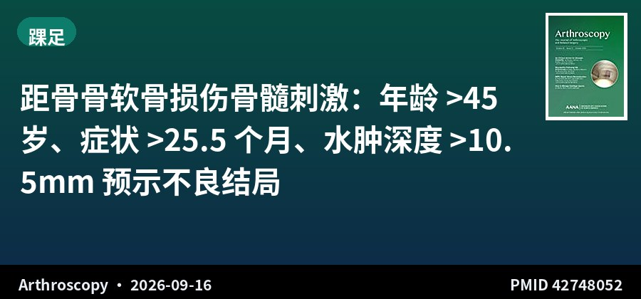
回顾性队列 · III级证据 · 103例 · 随访11.8年
距骨骨软骨损伤骨髓刺激：年龄 >45 岁、症状 >25.5 个月、水肿深度 >10.5mm 预示不良结局
Age Greater Than 45, Preop Symptom Duration, and Bone Marrow Edema Depth Negatively Impact Long-Term Outcomes After Bone Marrow Stimulation for Osteochondral Lesions of the Talus
Arthroscopy · 2026-09-16 · 北京大学第三医院运动医学科 · PMID 42748052
一句话结论：103 例病灶 <150mm² 的距骨骨软骨损伤行骨髓刺激（BMS），平均随访 11.8 年。各组 FAOS-QoL、AOFAS 与 MOCART 均较基线显著改善，但年龄越大结局越差（均 P<.001）；AOFAS MCID 达成率 96.7%（<30岁）、81.1%（30–45岁）、72.2%（>45岁）。
要点：按年龄分为 <30、30–45、>45 岁三组。>45 岁组中，术前症状持续时间 >25.5 个月（AUC 0.788）与基线骨髓水肿深度 >10.5mm（AUC 0.772）是预测 QoL 未达 MCID 的阈值；<45 岁者 MOCART/MOCART 2.0 评分显著更高（P=.031/.035）。
对临床的启示：这篇来自国内同行的长随访研究给出了非常可操作的术前咨询依据：对 >45 岁、症状已超过两年、且骨髓水肿深度超过 10.5mm 的距骨骨软骨损伤患者，应事先说明 BMS 的效果可能有限，并及早讨论自体/异体软骨移植或 MACI 等替代方案。在你正在撰写的距骨骨软骨损伤中国循证指南中，这三点可直接作为预后因素条目引用。
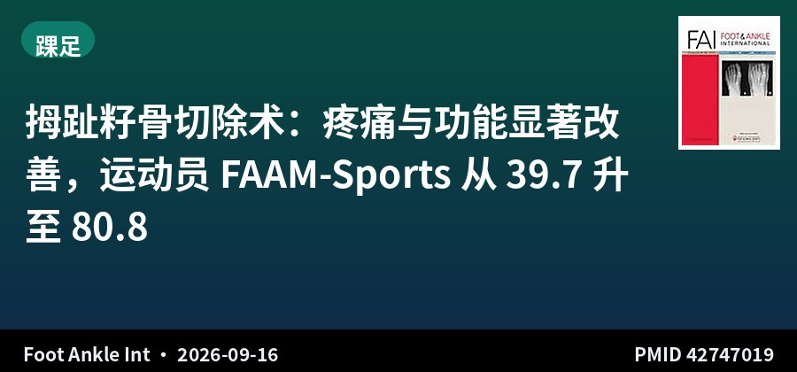
回顾性队列 · III级证据 · 42例 · 随访2.3年
拇趾籽骨切除术：疼痛与功能显著改善，运动员 FAAM-Sports 从 39.7 升至 80.8
Functional Outcomes Following Hallux Sesamoidectomy in Athletic and Non-Athletic Populations at Two-Year Follow-Up
Foot Ankle Int · 2026-09-16 · 美国匹兹堡大学 · PMID 42747019
一句话结论：42 例（含 23 名运动员）保守治疗无效的拇趾籽骨病变行籽骨切除，平均随访 2.3 年。FAAM-ADL 从 61.2 升至 84.7（P<.001），78.6% 达 MCID；VAS 从 4.6 降至 2.7（P<.001）；运动员 FAAM-Sports 从 39.7 升至 80.8（P<.001）。
要点：PROMIS 生理健康由 13.2 升至 15.8、心理健康由 13.9 升至 15.9（均 P<.001）。籽骨切除术式相对少见、缺乏标准化指南、长期结局数据有限，本研究聚焦保守治疗失败后的手术干预，并特别关注运动员人群。
对临床的启示：拇趾籽骨病变常被低估且处理棘手，这项研究为「保守失败后手术是否值得」提供了较乐观的数据——尤其运动员的 FAAM-Sports 提升幅度超过 40 分。但样本仅 42 例、属回顾性设计，且籽骨切除对第一跖趾关节长期生物力学的影响（如拇外翻、转移性跖痛）尚未回答，术后仍需长期随访。
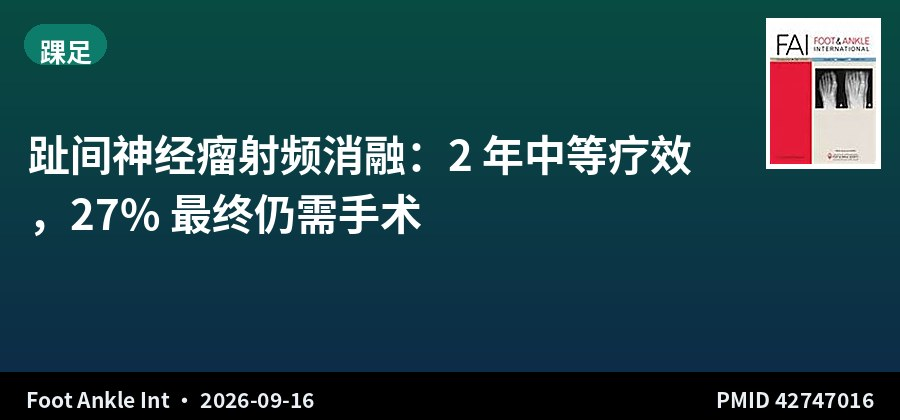
回顾性观察 · IV级证据 · 63例 · 随访2年
趾间神经瘤射频消融：2 年中等疗效，27% 最终仍需手术
Radiofrequency Ablation for Interdigital Neuroma: Moderate 2-Year Outcomes and Surgical Conversion Rate
Foot Ankle Int · 2026-09-16 · 西班牙瓦伦西亚足踝中心 · PMID 42747016
一句话结论：63 例单发有症状趾间神经瘤行射频消融（RFA），随访≥2 年：65.2% 达到 VAS 下降 ≥3 分的临床意义改善，MOXFQ 各维度均改善（P<.001）且疼痛与功能亚量表超过 MCIC；但 27.0% 患者最终仍需手术治疗。
要点：排除多发或双侧神经瘤者。未发现临床反应的显著预测因素。作者强调 RFA 更适合经严格筛选的患者，术前应给出符合实际的预期。
对临床的启示：RFA 作为微创选项，疗效是「中等」而非「确凿」——近三分之一患者最终仍需手术，这个转化率在告知患者时必须讲清楚。由于本研究未找到有效的反应预测因素，目前难以在术前判断谁会是那 65% 的获益者。将它定位为「避免或推迟手术的中间选项」比定位为「替代手术」更准确。
关于本栏目：每日定时检索 AJSM、Arthroscopy、Arthroscopy Techniques、KSSTA、Sports Health、OJSM、J ISAKOS、Sports Medicine、Foot & Ankle International、JSES 共 10 本运动医学核心期刊前一日新收录文献，按关节分类，AI 辅助生成中文精要。
声明：本内容由 AI 辅助整理，仅供学术交流参考，观点与数据请以原文为准，不构成诊疗建议。文献题录与摘要来源：PubMed。
— 运动医学 · 关节镜文献速览 · 第 010 期 —